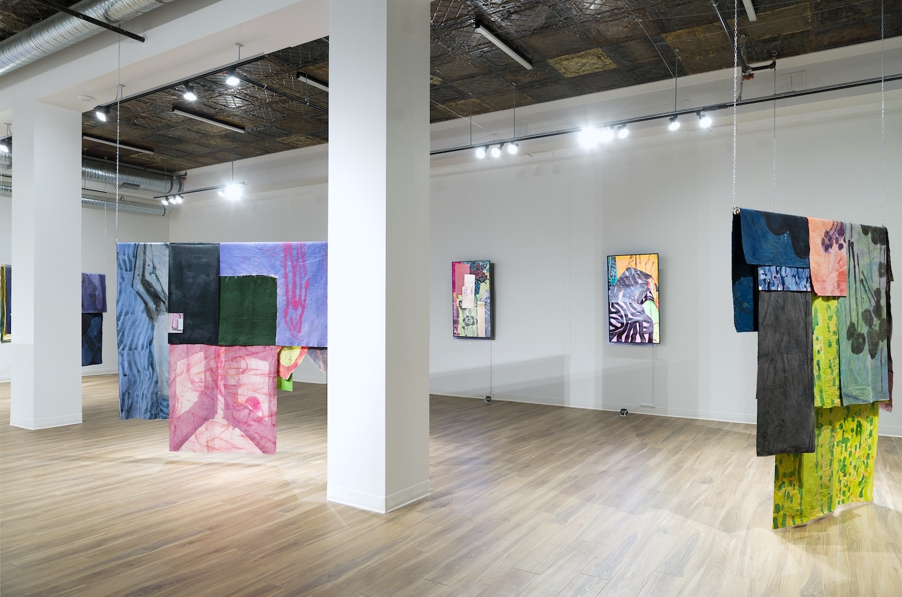
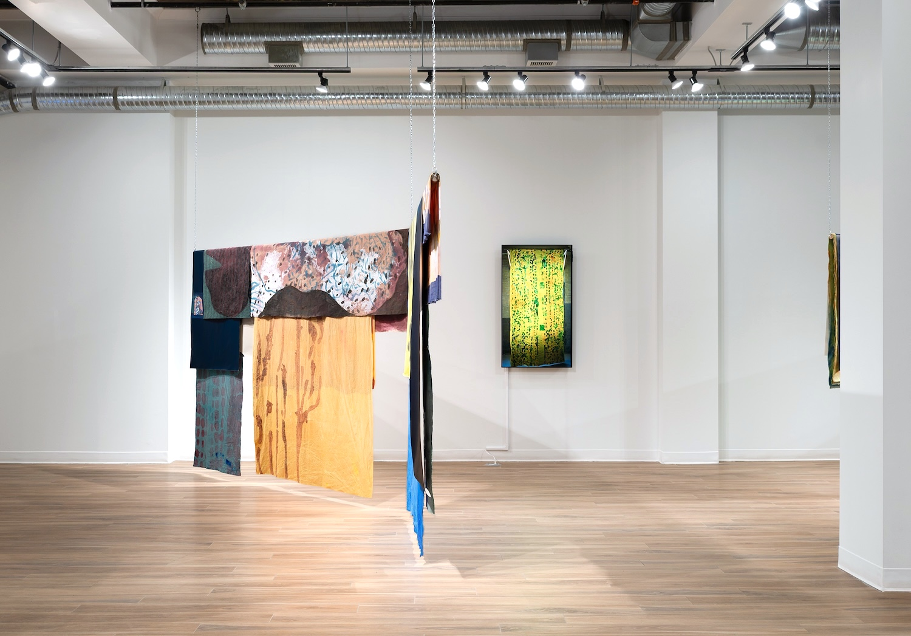
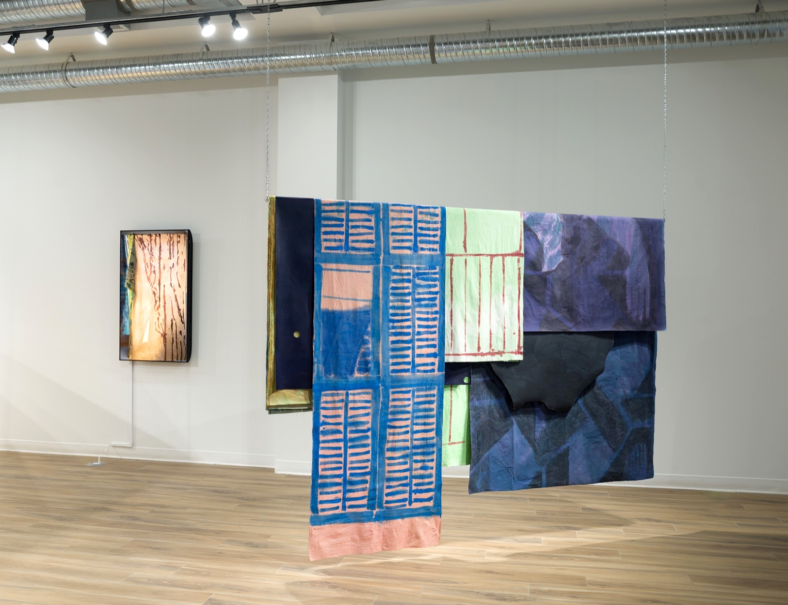
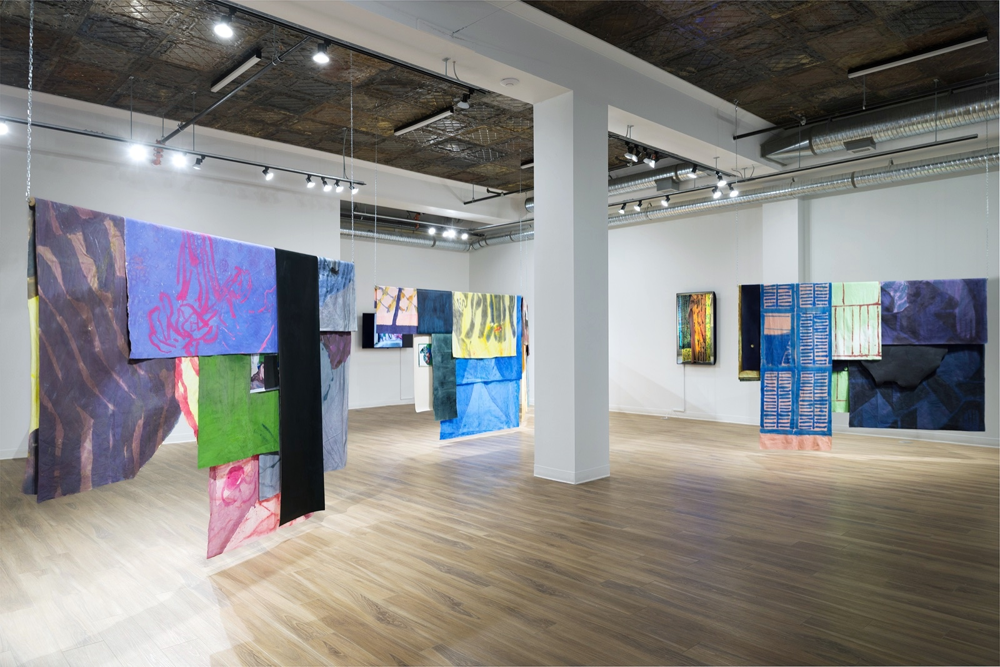
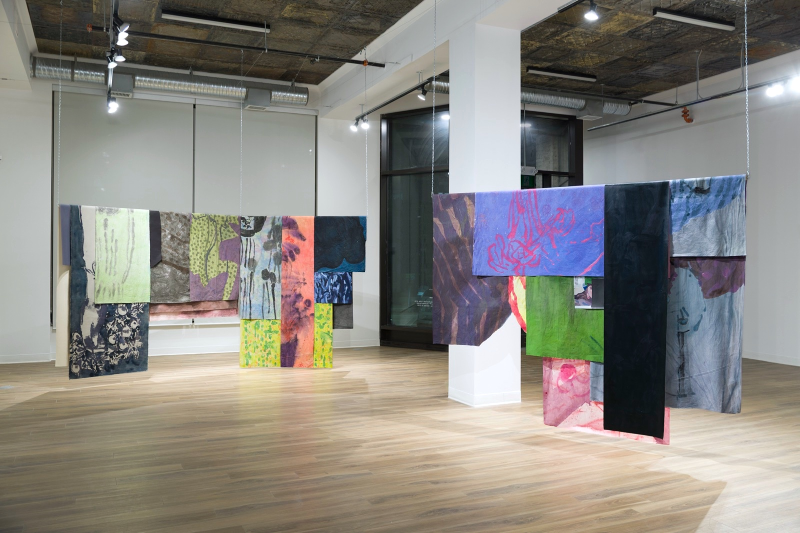
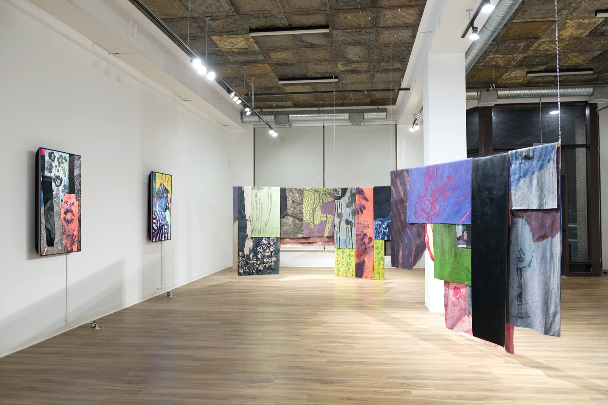
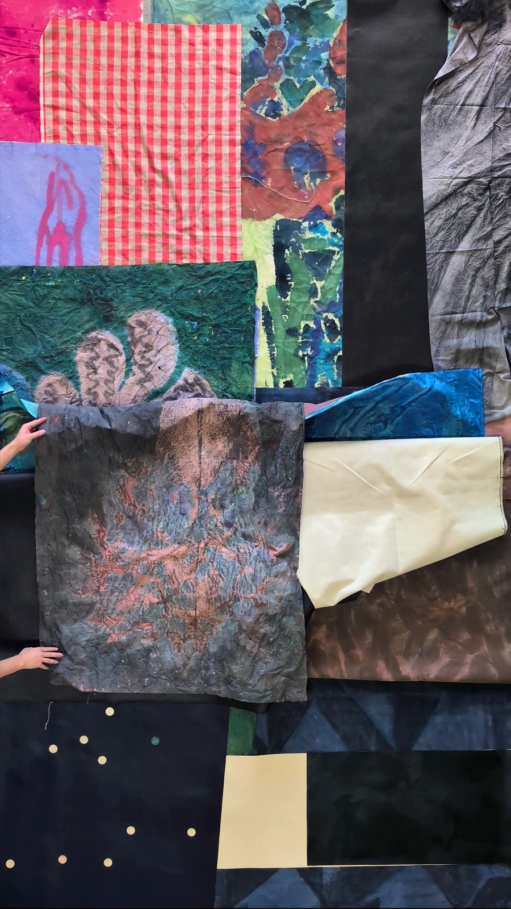
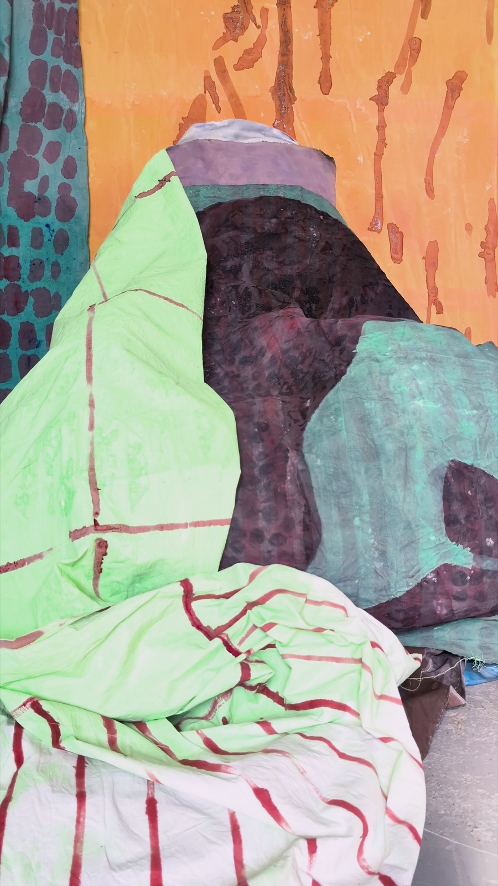
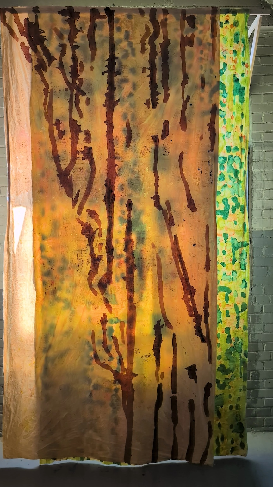
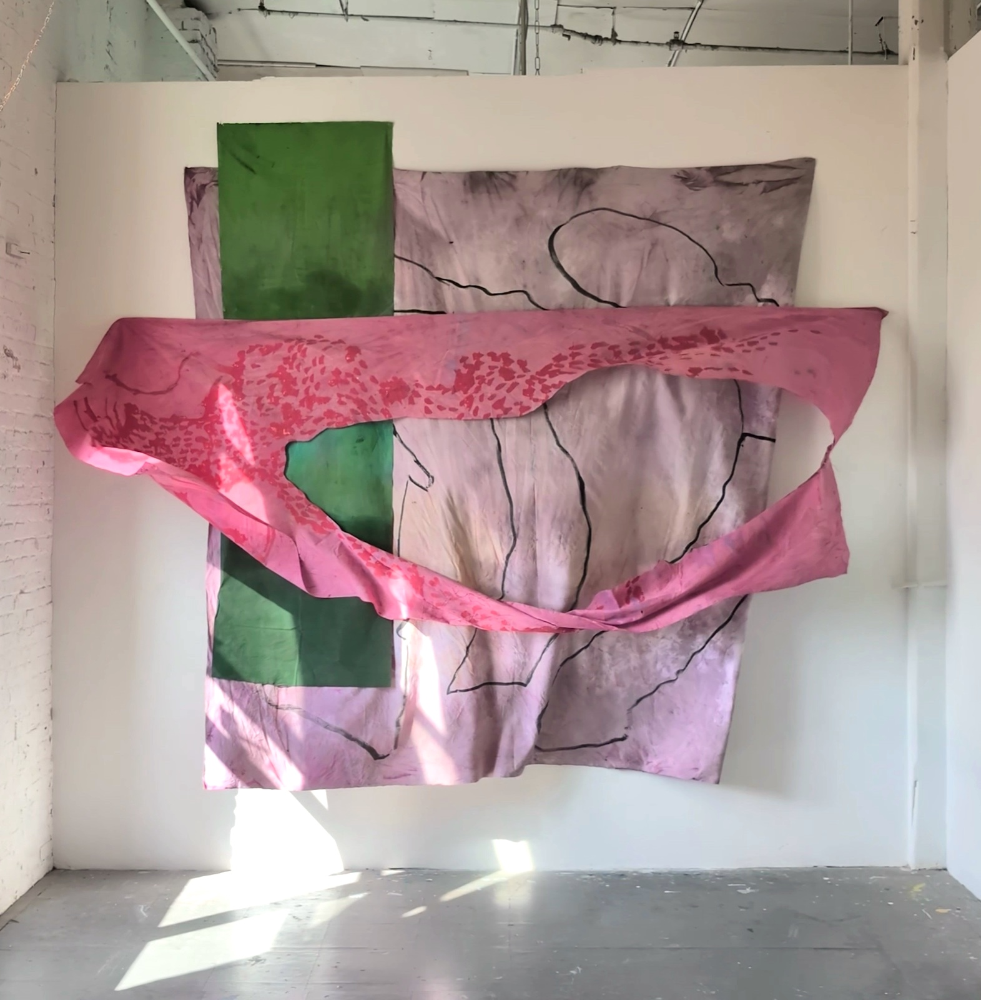

Left / Right: Draped Composition (In-Progress), 2024–2025, acrylic, tempera, ink, oil paint on canvas and recycled fabrics
Centre: Perennial, 2025, 4K digital video, loop / Seated Figure, 2025, 4K digital video, loop

Left: Draped Composition (In-Progress), 2024–2025, acrylic, tempera, ink, oil paint on canvas and recycled fabrics
Centre: Yellow Curtain, 2025, 4K digital video, loop

Right: Draped Composition (In-Progress), 2024–2025, acrylic, tempera, ink, oil paint on canvas and recycled fabrics
Left: Yellow Curtain, 2025, 4K digital video, loop

Installation view

Installation view

Installation view

Perennial, 2025, 4K digital video, loop

Seated Figure, 2025, 4K digital video, loop

Yellow Curtain, 2025, 4K digital video, loop

Holding Patterns (No.3), 2025, 4K digital video and sound, loop